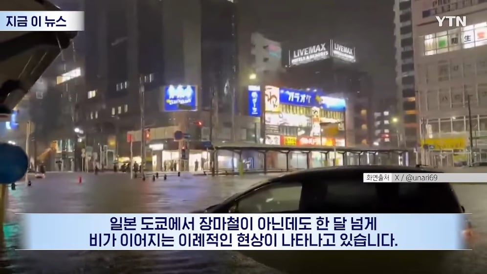
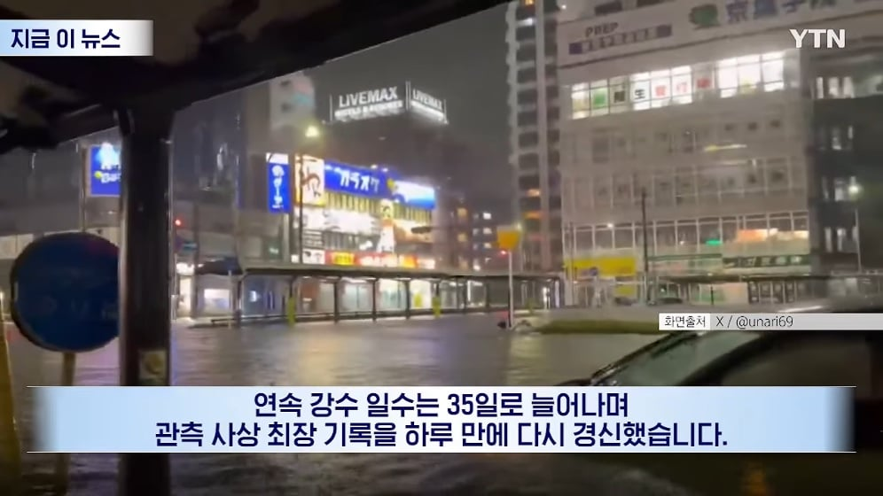
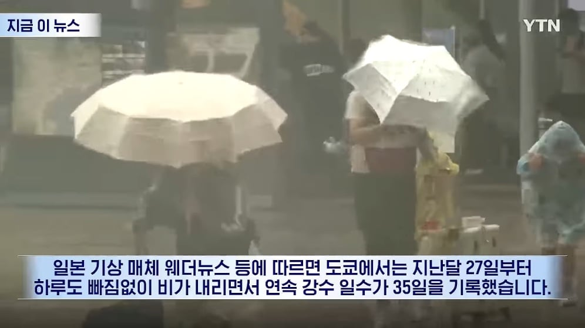
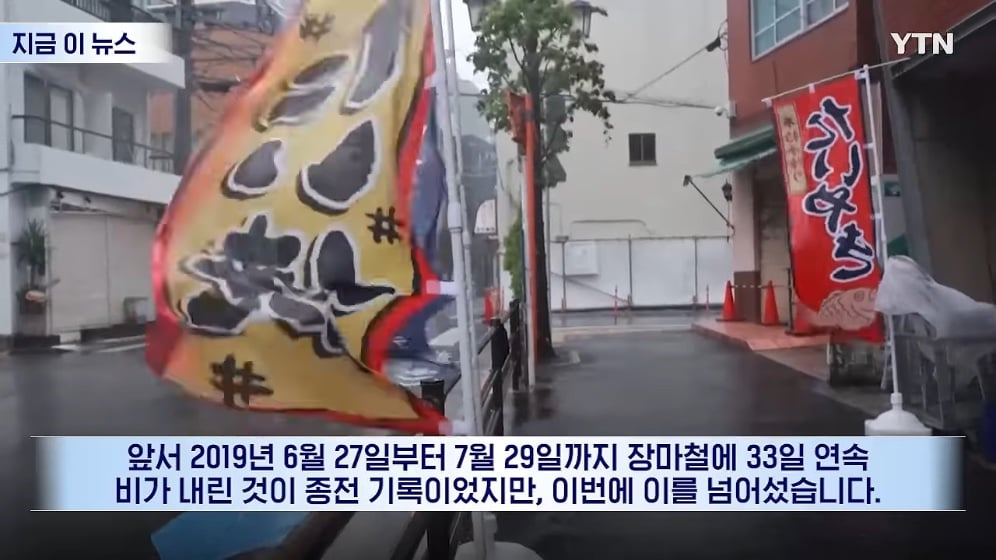
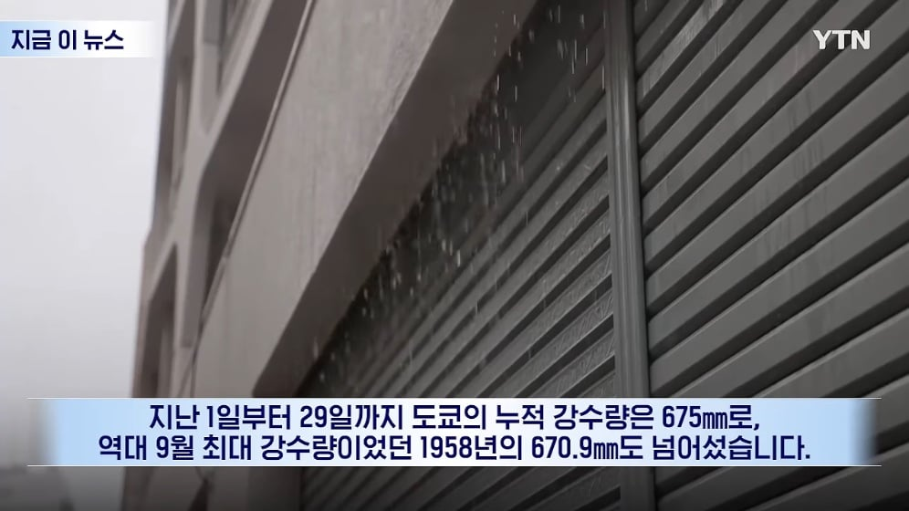
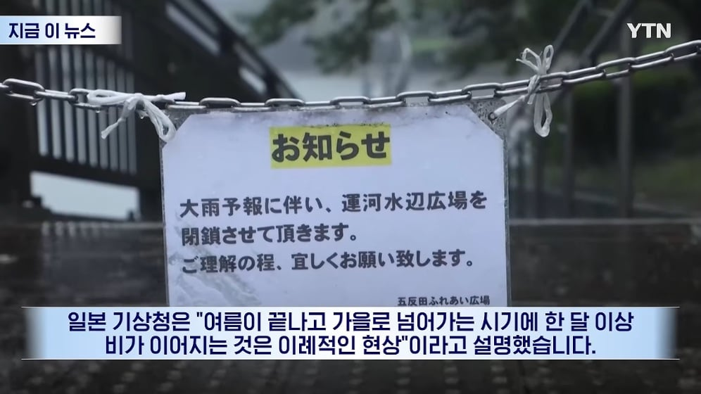
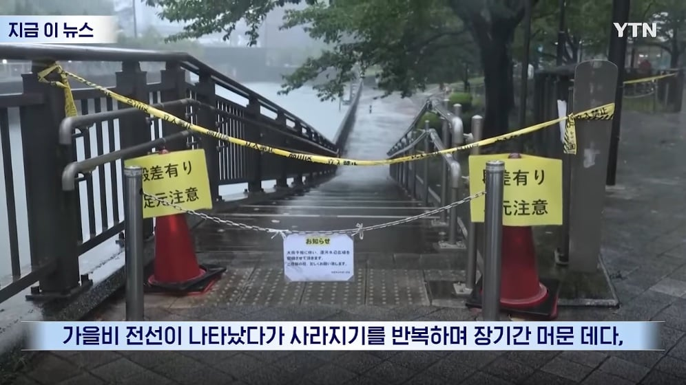
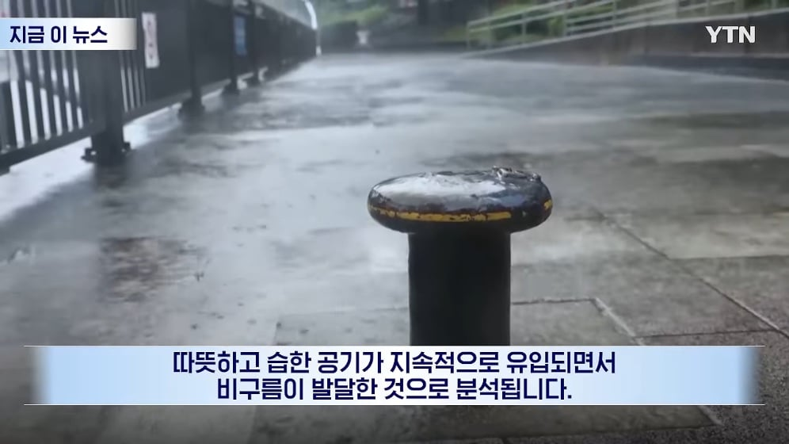
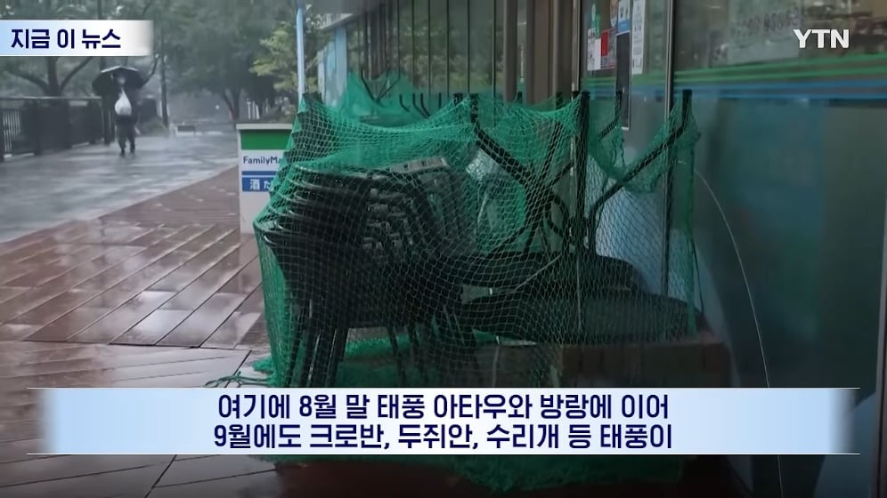
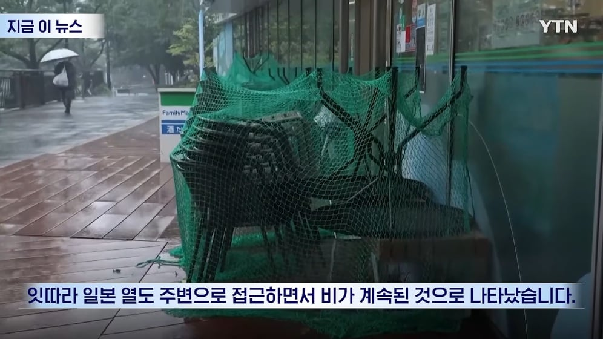
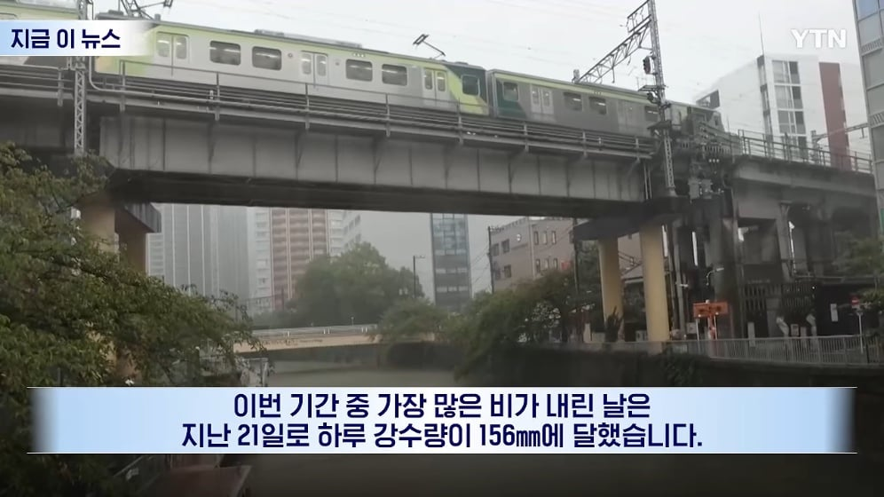
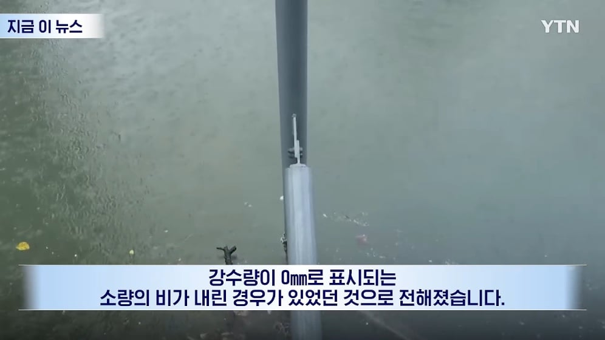
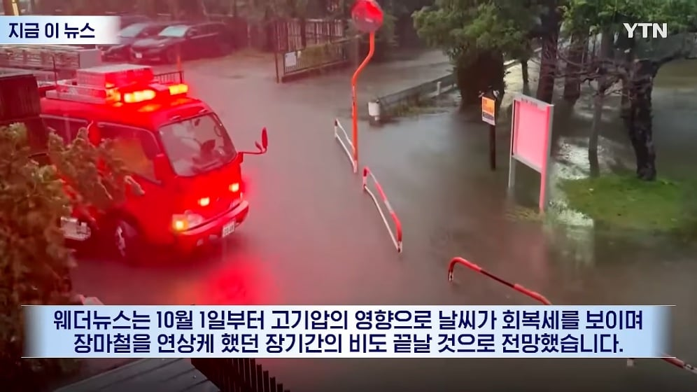
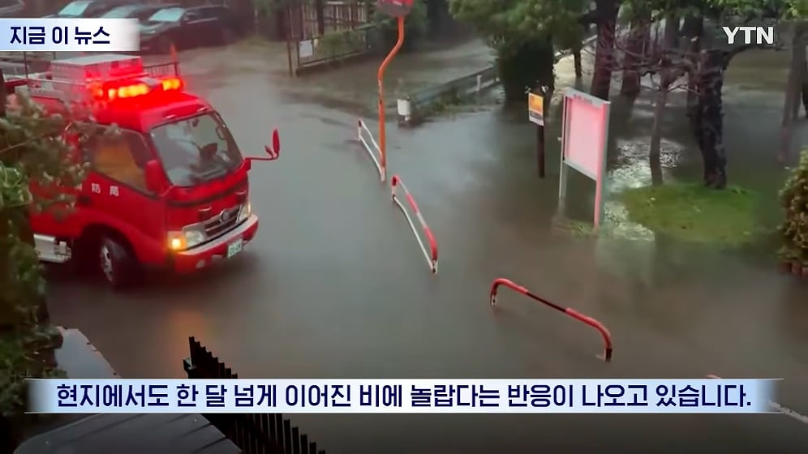
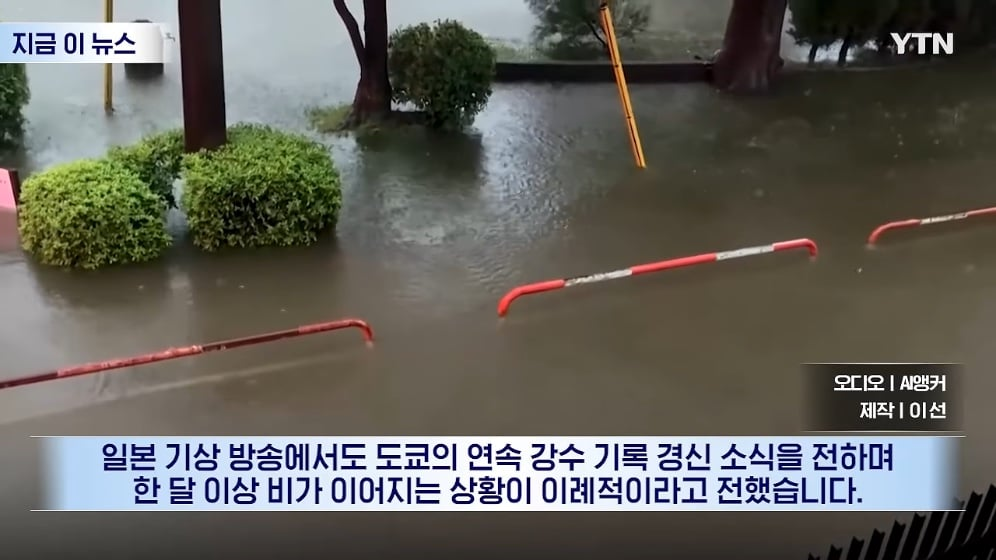















늑느카니
아메리카노
지구온나나카크래쉬
한국이 튕겨낸 비구름맛이 어떠냐
오늘 날씨 괜찮았는데 내일 또 비온다니까 진짜 한달동안 짜증나 죽겠더라
근데우리는지금반대로 한달내내비안내리는거같음 그나마 서울은 지난주비아주조금내렸지.
그런데 전국이다내린건아니더라
이번주 일-월 넘어갈즈음에 수도권에 비 조금 잡혀있는거 같더라.
지금 모든 계획 빠그라지고 비까지 오니까 슬슬 사람이 미쳐가긴 함 ㅋㅋㅋ
신카이 마코토 네 이놈!!!
날씨의아이 때문 아님??
마지막에 살려가지고 결국 하늘에 구멍 뚫리고 재해 못 막았잖아
아마 그런듯... 지금이라도 잡아죽여야 ㅠㅠ
바르셀로나도 방콕도 홍수로 난리던데
9월말에 뭔일인지
이건 완전 바람막이에 우산이네
한달 내내 오면 좀 쉽지않네
나 이거 날씨의아이 에서 봤어
히나짱이 돌아왔으니 그걸로 됐다..
날씨의아이 생각나네
날씨의 아이???
유메니 보쿠라데 호핫테~
날씨의 아이 이 미친새끼
꿉꿉해서 어찌사나
어릴적 이삼주씩 비오면 제습기도 없던시절
세상이 다 축축하고 빨래안말라서 냄새나고 그랬는데
대충 체감에 30도에 습도 100%이런데도
어른은 정장입고
애들은 교복입고
제복 개빡시게 잘 입는거 보니깐 신기함
코인세탁방 사장님들은 신났어유~~
나 일본 갔는데 계속 비와써 ㅠㅠㅠㅠㅠㅠ
말투 ㅅㅂ치단함
아시안게임 기간 내내 야외종목들은 비 맞고 있더라ㅋㅋㅋㅋㅋㅋㅋ
저러다 또 지진 큰거 오려나
습기 200퍼
오
비의 나라 ㄷㄷ
우리나라도 2020년 여름에 저랬음. 서울은 54일간, 제주도는 67일동안 연속 비
습도땜에 9월에도 에어콘 존나켬
열대기후로 바뀌는건가???
아메온나